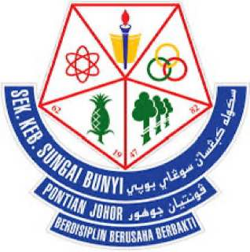
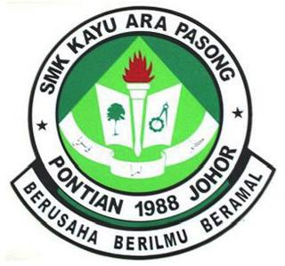
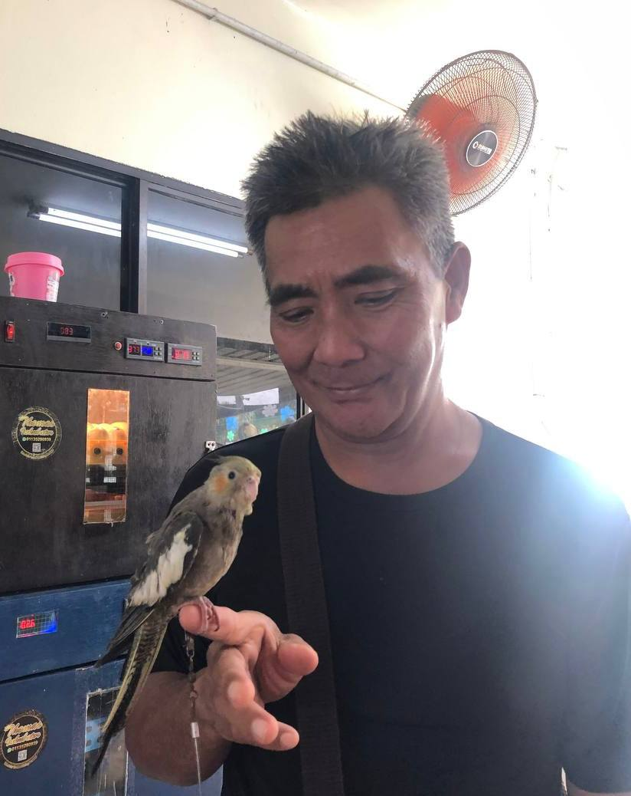
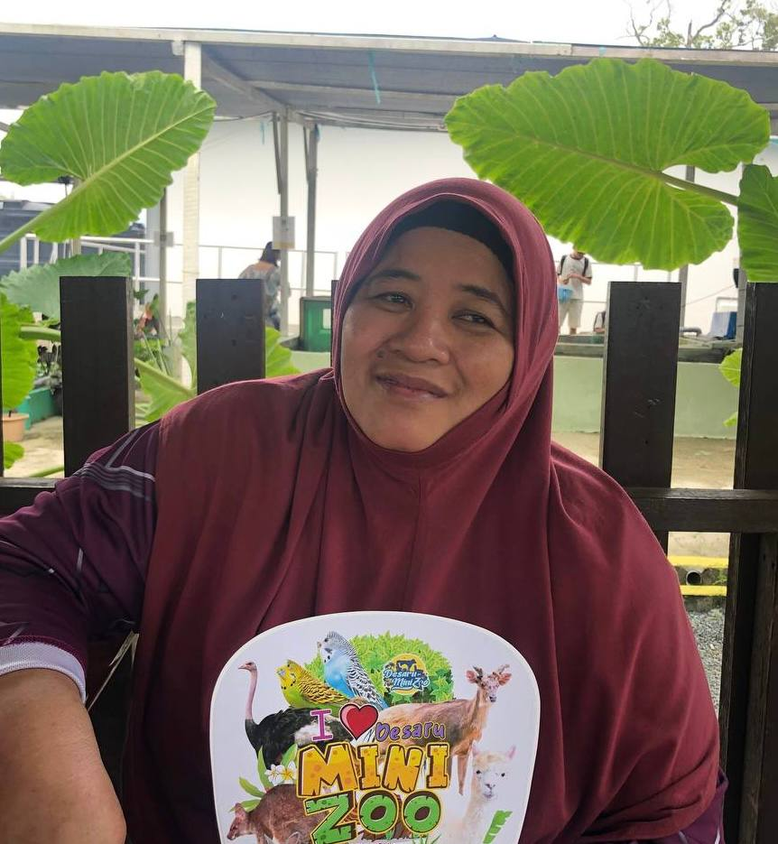
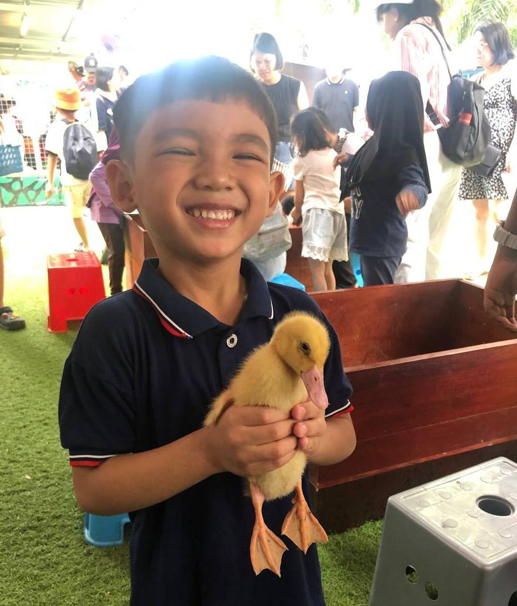
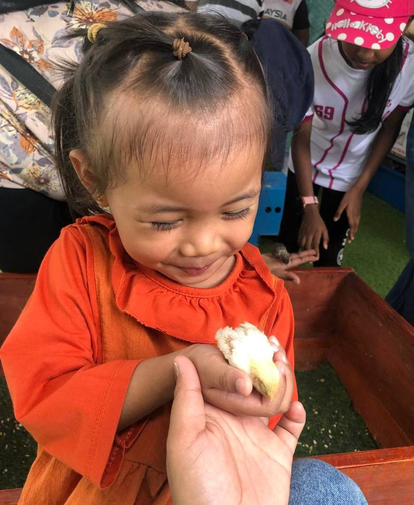

Personal Details
Details
| Full Name | Siti Najwa Fitri binti Mohd Nazam |
| Date of Birth | 19 February 2002 |
| Age | 23 |
| Place of Birth | Hospital Pontian, Johor |
| Gender | Female |
| Race | Malay |
| Status | Single |
| Favourite Colour | Light blue |
| najwanazam337@gmail.com |
Education Background

| School Name | Level | Year | Exam | Result |
|---|---|---|---|---|
| Sekolah Kebangsaan Sungai Bunyi | Primary | 2007-2011 | none | none |
| Sekolah Kebangsaan Parit Kudus | Primary | 2012-2014 | UPSR | 4A 1B |

| Sekolah Menengah Kebangsaan Kayu Ara Pasong | Secondary | 2015-2019 | SPM | 2A 2A- 1B+ 1C |

| Kolej Tingkatan Enam Pontian | Form 6 | 2020–2021 | STPM | 3.25 CGPA |
| UiTM Kampus Rembau | Degree | 2023–Present | Ongoing | Current CGPA: 3.28 |
Family Background
My Parents

Father: Mohd Nazam bin Maksam
Father: Mohd Nazam bin Maksam

Mother: Zaiton binti Bunadi@ Hj. Omar
Mother: Zaiton binti Bunadi@ Hj. Omar
My Siblings

1st: Siti Nabilah binti Mohd Nazam

2nd: Siti Najwa Fitri binti Mohd Nazam

3rd: Muhammad Zulhelmi bin Mohd Nazam
My Older Sister's Family
Sister: Siti Nabilah binti Mohd Nazam
Brother-in-law: Sahrizan bin Sukardi

Nephew: Muhammad Adam Mikayla bin Sahrizan
Nephew: Muhammad Adam Mikayla bin Sahrizan

Niece: Nur Nadhira Mikayla binti Sahrizan
Niece: Nur Nadhira Mikayla binti Sahrizan